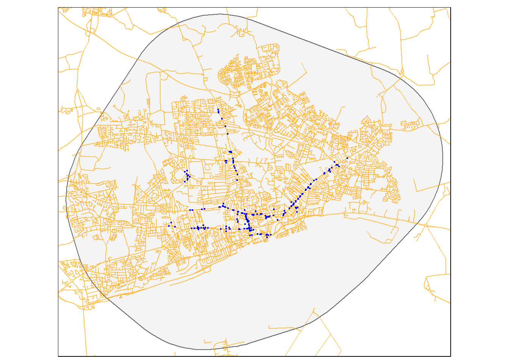
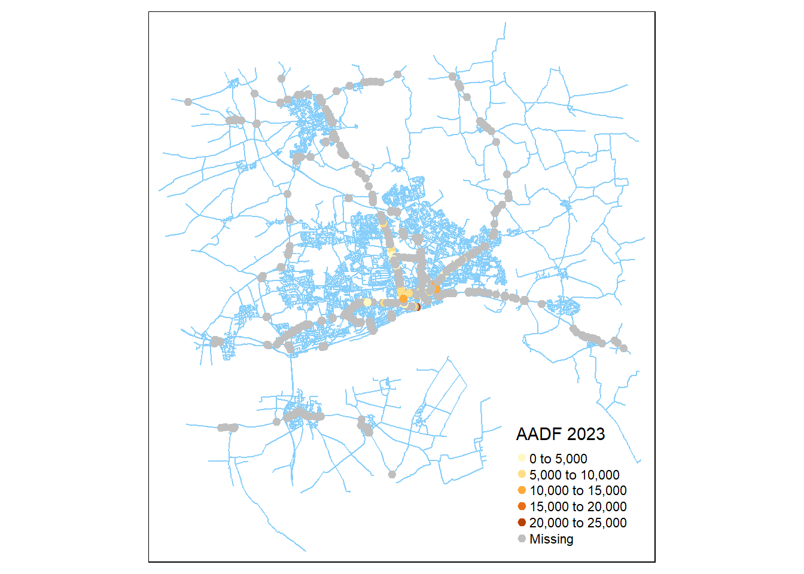
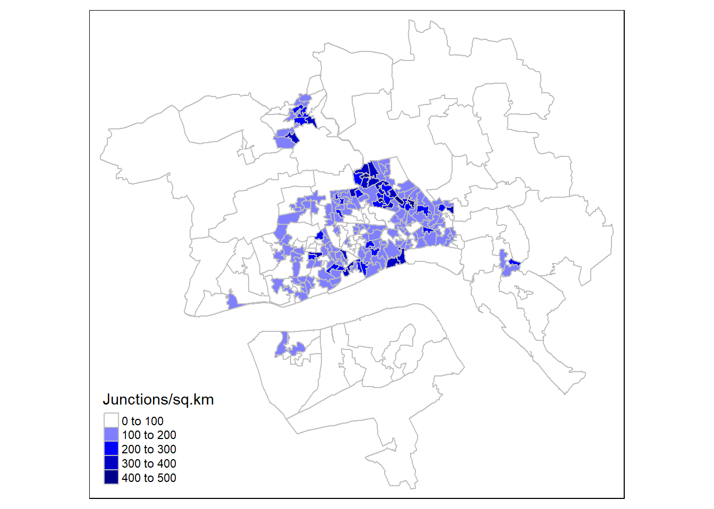
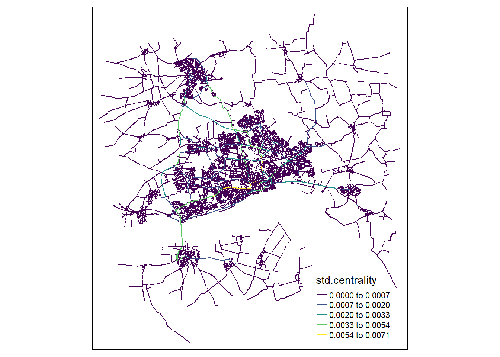
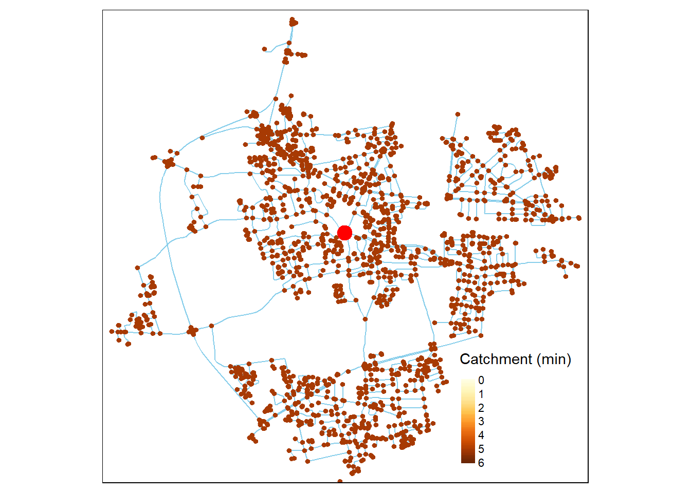

library(tidyverse)
library(dodgr)
library(osmextract)
library(sf)
library(tmap)
library(stplanr)Road Network
The following code uses some functions compiled in the MinorRoadTraffic repository prepared by Malcolm Morgan and follows the process described in this vignette of the same package.
# remotes::install_github("ITSLeeds/MinorRoadTraffic") # if not installed
library(MinorRoadTraffic)
Attaching package: 'MinorRoadTraffic'The following object is masked from 'package:stplanr':
line_segmentDownloading data
For this analysis, OpenStreetMap will be used for the road network. Network data will be downloaded in silicate format
The study area bounds will be used to clip the road network, these are read from the files produced before
sf_counts <- st_read("03_preprocessing_files/grouped_counts.geojson")Reading layer `grouped_counts' from data source
`C:\Users\ts18jpf\OneDrive - University of Leeds\02_MsC\99_GEOG5099M_Dissertation\GEOG5099_Analysis\03_preprocessing_files\grouped_counts.geojson'
using driver `GeoJSON'
Simple feature collection with 185 features and 4 fields
Geometry type: POINT
Dimension: XY
Bounding box: xmin: 505930.6 ymin: 428325.3 xmax: 513352.9 ymax: 433636.7
Projected CRS: OSGB36 / British National Gridbounds <- st_read(dsn = "03_preprocessing_files/bounds.geoJSON")Reading layer `bounds' from data source
`C:\Users\ts18jpf\OneDrive - University of Leeds\02_MsC\99_GEOG5099M_Dissertation\GEOG5099_Analysis\03_preprocessing_files\bounds.geoJSON'
using driver `GeoJSON'
Simple feature collection with 1 feature and 0 fields
Geometry type: POLYGON
Dimension: XY
Bounding box: xmin: 501634.1 ymin: 423660 xmax: 517322.2 ymax: 437607
Projected CRS: OSGB36 / British National GridA bbox is generated from the bounds to be used to extract the OSM data with dodgr_streetnet_sc
bbox_hull <- bounds |> st_transform(4326) |> st_bbox() |> as.numeric()if(!file.exists("03_preprocessing_files/osm_sc.rds")) {
# This is required when firewall restrictions apply
assign("has_internet_via_proxy",
TRUE,
environment(curl::has_internet))
osm_sc <- dodgr_streetnet_sc(bbox = bbox_hull)
write_rds(osm_sc, "03_preprocessing_files/osm_sc.rds")
} else {
osm_sc <- read_rds("03_preprocessing_files/osm_sc.rds")
}An alternative source can be the OS Open Roads.
Pre-Processing OSM
Join with other datasets
Traffic counts
aadf_data <- read_csv(
"03_preprocessing_files/aadf_data.csv",
col_types = cols(
group_id = col_double(),
subgroup_id = col_double(),
flow.2022 = col_double(),
flow.2023 = col_double()
)
)Joining the counts and the spatial data
sf_aadf <- sf_counts |>
left_join(aadf_data,by = join_by(group_id, subgroup_id))It is assumed that the locations of the loops are correct and the uncertainty of the coordinates is very small.
The assign_aadt_major of the MinorRoadsTraffic package uses voronoi diagrams to assign the traffic flows to the major roads of the network. The assignment will be different for this analysis for the following reasons:
- The hull dataset has unidirectional traffic counts, as opposed to the bi-directional counts of the dataset by DfT .
- Traffic counts represent the flow in a specific section of the road links, other sections before and after adjacent junctions might be different.
A graph is created using the dodgr package
major_ref = c("motorway",
"motorway_link",
"primary",
"primary_link",
"trunk",
"trunk_link",
"secondary",
"secondary_link",
"tertiary",
"tertiary_link")
road_types = c("motorway", "motorway_link", "trunk", "trunk_link", "primary",
"primary_link", "secondary", "secondary_link",
"tertiary", "tertiary_link",
"unclassified", "living_street", "residential")
graph <- dodgr::weight_streetnet(osm_sc,
keep_cols = c("name","ref","highway","junction","maxspeed","oneway"),
wt_profile = "motorcar"
)Loading required namespace: geodistAs the network has been clipped, it is possible to find some disconnected parts from the main network, these smaller component will be discarded; additionally, duplicated edges are discarded.
main_component <- tibble(component = graph$component) |>
count(component) |>
filter(n == max(n)) |>
pull(component)
# Discarding unconnected roads and not public roads
graph_c1 <- graph[graph$component %in% main_component & graph$highway %in% road_types,] |>
dodgr_deduplicate_graph()Betweenness centrality is calculated using the contracted graph and dodgr
graph_clean <- graph_c1 |>
dodgr_centrality(contract = T)An sf object is produced from the clean network
graph_sf <- dodgr::dodgr_to_sf(graph_clean) |>
st_transform(27700)A quick visualisation
tmap_mode("plot")tmap mode set to plottingtm_shape(bounds)+
tm_polygons(alpha = 0.3)+
tm_shape(graph_sf)+
tm_lines(col = "orange",alpha = 0.4)+
tm_shape(sf_aadf)+
tm_dots(col = "blue")
Links within 20 metres from the count are considered and then filtered using the stated direction; then the nearest feature/link with the correct bearing is selected. If two or more counts are assigned to the same road link/graph, the mean flow is calculated.
traffic_buffer <- sf_aadf |>
st_buffer(20)
road_intersects <- st_intersects(traffic_buffer,graph_sf)
dirs_tbl <-
tibble(
dir_str = c(
"southbound",
"westbound",
"northbound",
"eastbound",
"northeastbound",
"northwestbound",
"southeastbound",
"southwestbound"
),
t_bearing = c(180, -90, 0, 90,
45, -45, -135, 135)
)
#Bearing tolerance
b_tolerance <- 90
sf_aadf$edge_id <- vapply(seq_len(nrow(traffic_buffer)),
function(t_count){
str_dir_bearing <- dirs_tbl$t_bearing[traffic_buffer$dir_str[t_count]==dirs_tbl$dir_str]
sel_road_links = graph_sf[road_intersects[[t_count]],]
if(nrow(sel_road_links)>0) {
sel_road_links$bearing = stplanr::line_bearing(l = sel_road_links |>
st_transform(crs = 4326))
sel_road_links$bearing_check = (str_dir_bearing - abs(sel_road_links$bearing)) < b_tolerance
sel_road_links = sel_road_links[sel_road_links$bearing_check, ]
t_edge = sel_road_links[st_nearest_feature(sf_aadf[t_count, ], sel_road_links), ] |>
st_drop_geometry()
return(t_edge$edge_id)
} else{
return(NA_character_)
}
},
character(1))
edge_flow <- sf_aadf |>
st_drop_geometry() |>
drop_na(edge_id) |>
summarise(across(starts_with("flow"),mean),.by = edge_id)A final version of the sf object of the network with the known flows is produced
graph_contr = dodgr::dodgr_contract_graph(graph_clean)
graph_sf_flows <- graph_sf |>
left_join(edge_flow,by="edge_id")
graph_sf_flows$road_type <-
dplyr::if_else(graph_sf_flows$highway %in% major_ref,
"major",
"minor")tm_shape(graph_sf_flows)+
tm_lines(col = "road_type",lwd = 1,palette = "-Greens")The following map shows the road network and the flows that have been assigned
tmap_mode("plot")
tm_shape(sf_aadf)+
tm_dots("blue",alpha=0.5)+
tm_shape(graph_sf_flows |> filter(is.na(flow.2023)))+
tm_lines("grey",lwd = 1)+
tm_shape(graph_sf_flows |> drop_na(flow.2023))+
tm_lines("flow.2023",lwd = 2.5)
Junctions
Junctions are extracted from the contracted graph to avoid redundant nodes
junctions <- dodgr::dodgr_vertices(graph_contr) |>
st_as_sf(coords = c("x","y"),
crs = 4326)Junctions will be classified as minor, major and minor-major depending on the adjacent links.
junction_class_to <- graph_sf_flows |>
st_drop_geometry() |>
summarise(count = n(),.by = c(to_id,road_type)) |>
pivot_wider(names_from = road_type,values_from = count)|>
rename(id = to_id)
junction_class_from <- graph_sf_flows |>
st_drop_geometry() |>
summarise(count = n(),.by = c(from_id,road_type)) |>
pivot_wider(names_from = road_type,values_from = count) |>
rename(id = from_id)
junctions_classed <- junction_class_to |>
full_join(junction_class_from,by = "id",suffix = c(".to",".from")) |>
mutate(jct_type = case_when(is.na(minor.to)&is.na(minor.from)~"major",
is.na(major.to)&is.na(major.from)~"minor",
(!is.na(minor.to)&!is.na(major.from))|
(!is.na(minor.from)&!is.na(major.to))~"minmaj")) |>
select(-starts_with("m"))
rm(junction_class_from,junction_class_to)Mean incoming approach flows are calculated for all junctions, i.e. if a junction has 4 incoming roads/edges, an average of the 4 is calculated. Outgoing flows are not considered to avoid double-counting since the in and out flows should be the same.
junctions_in_flows <- graph_sf_flows |>
st_drop_geometry() |>
summarise(across(starts_with("flow"),\(x) mean(x,na.rm = T)),.by = c(to_id))|>
rename(id = to_id)junctions_flows <- junctions |>
left_join(junctions_in_flows,by = "id") |>
left_join(junctions_classed,by = "id")
rm(junctions_classed,junctions_in_flows,junctions)The following map shows the average flow in Minor-Major junctions.
tmap_mode("plot")tmap mode set to plottingtm_shape(graph_sf_flows)+
tm_lines("#87CEFA",lwd = 1)+
tm_shape(junctions_flows |> filter(jct_type == "minmaj"))+
tm_dots(col = "flow.2023",size = 0.2, title = "AADF 2023")
LSOA data
lsoa_data <- st_read("03_preprocessing_files/LSOA_data.gpkg")Reading layer `LSOA_data' from data source
`C:\Users\ts18jpf\OneDrive - University of Leeds\02_MsC\99_GEOG5099M_Dissertation\GEOG5099_Analysis\03_preprocessing_files\LSOA_data.gpkg'
using driver `GPKG'
Simple feature collection with 259 features and 10 fields
Geometry type: MULTIPOLYGON
Dimension: XY
Bounding box: xmin: 488932.5 ymin: 411729 xmax: 527121.4 ymax: 446712.1
Projected CRS: OSGB36 / British National GridRoad links are spatially joined to the LSOA based on the largest overlap.
Catchment of individual links
It will be assumed that the length of each road will be proportional to the population served in each LSOA, i.e. if there are two roads in an LSOA, one with 750 m and the other with 250 m, their distribution will be assumed as 75% and 25% respectively.
edge_lsoa <- graph_sf_flows |>
select(edge_id,d) |>
st_join(lsoa_data |> select(LSOA21CD),
largest = T) |>
st_drop_geometry() |>
mutate(portion_lsoa = d/sum(d),.by = LSOA21CD) |>
select(-d)Warning: attribute variables are assumed to be spatially constant throughout
all geometriesNetwork metrics
Road density
This is an improved version of the road_density function in the MinorRoadTraffic package
zone_inter <- sf::st_intersects(lsoa_data, graph_sf_flows)
lsoa_data$road_km <- pbapply::pbvapply(seq_along(zone_inter),
function(zone) {
t_zone <- lsoa_data[zone,]
line <- graph_sf_flows[zone_inter[[zone]],]
if (nrow(line) == 0) {
return(0)
}
line <- sf::st_intersection(t_zone, line)
return(sum(as.numeric(sf::st_length(line))) / 1000)
},
FUN.VALUE = numeric(1))
lsoa_data_density <-
lsoa_data |> mutate(area_km2 = as.numeric(st_area(geom)) / 1e6,
road_density = road_km / area_km2)A map of the road density in \(km/km^2\):
tm_shape(lsoa_data_density)+
tm_polygons(col = "road_density",
title = "road km/sq.km",
palette = "Greens",
border.col = "grey")Junction density
Similarly, the junction is calculated with the following code:
lsoa_junctions <- sf::st_intersects(lsoa_data,
junctions_flows |> st_transform(27700))
lsoa_data_density$jct_counts <- pbapply::pbvapply(lsoa_junctions,length,integer(1))
lsoa_data_density2 <-
lsoa_data_density |> mutate(area_km2 = as.numeric(st_area(geom)) / 1e6,
jct_density = jct_counts / area_km2)A map with the junction density
tm_shape(lsoa_data_density2)+
tm_polygons(col = "jct_density",
title = "Junctions/sq.km",
palette = c("white","blue","darkblue"),
border.col = "grey")
Centrality
The values of centrality calculated before are scaled dividing by the maximum value
graph_sf_centrality <- graph_sf_flows |>
mutate(std.centrality = centrality/max(centrality,na.rm = T))A map to explore the centrality results
tmap_mode("plot")tmap mode set to plottingtm_shape(graph_sf_centrality)+
tm_lines(col = "std.centrality",palette = "viridis",lwd = 1,style = "fisher")
Catchment for major roads
Points withing iso-chrone bands are extracted using the graph
nodes_list <- junctions_flows |>
filter(jct_type!="minor") |> pull(id) |> unique()
# Distance bands
tlim <- c (1,2,3,4,5)*60
d <- dodgr_isoverts(graph_contr, from = nodes_list,tlim = tlim) |>
mutate(tlim = tlim / 60)An example of the results for one of the nodes
tmap_mode("plot")tmap mode set to plottingnodes_sample <-c("858681448", d |>
filter(from=="858681448") |>
pull(id))
tm_shape(graph_sf |>
filter(from_id %in% nodes_sample&to_id %in% nodes_sample))+
tm_lines("skyblue")+
tm_shape(d |>
st_as_sf(coords = c("x","y"),crs = 4326) |>
filter(from == "858681448"))+
tm_dots("tlim",size = 0.1,breaks = c (0,1,2,3,4,5,6),title = "Catchment (min)")+
tm_shape(junctions_flows |>
filter(id == "858681448"))+
tm_dots("red",size = 1)
Distance from minor-major junctions
First the mid-point of all lines are extracted
midpoints <- dodgr::dodgr_to_sf(graph_clean) |>
st_drop_geometry() |>
select(edge_id) |>
bind_cols(
dodgr::dodgr_to_sf(graph_clean) |>
st_coordinates() |>
data.frame() |>
tibble() |>
filter(row_number()==ceiling(n()/2),.by =L1) |>
select(-L1)) |>
# Extracting ids from uncontracted graph
left_join(graph_clean |> dodgr_vertices(),
by = c("X"="x","Y"="y"))Junctions with known flows are sub-set and then distances from all mid-points to these junctions are calculated.
id_jct_flows <- junctions_flows |>
filter(!is.na(flow.2023))
times_matrix_flows <- dodgr_times(graph_clean,
from = id_jct_flows$id,
to = midpoints$id,
shortest = F)Checking the number of unconnected links. Zero are expected as we are analysing the main component of the graph
length(colSums(times_matrix_flows)[is.na(colSums(times_matrix_flows,na.rm = T))])[1] 0Using the times matrix, we extract the id of the nearest junction with known flows
fastest_all <- tibble(
id.jct =
apply(times_matrix_flows, 2,
\(x) {id_jct_flows$id[match(min(x,na.rm = TRUE), x)]}
),
dist.jct =
apply(times_matrix_flows, 2,\(x) min(x,na.rm = TRUE)
)
)Joining the id of the nearest known count and the distance.
midpoints_jct <- midpoints |> select(edge_id) |> bind_cols(fastest_all)
graph_sf_centrality |>
left_join(midpoints_jct,
by = join_by(edge_id)) |>
tm_shape()+
tm_lines("dist.jct")Consolidating all data
sf_net_full_data <- graph_sf_centrality |>
left_join(midpoints_jct,
by = join_by(edge_id)) |>
left_join(junctions_flows |>
st_drop_geometry() |>
select(id,flow.2022,flow.2023),
by = c("id.jct"="id"),
suffix = c("",".jct")) |>
left_join(edge_lsoa,by = join_by(edge_id))Saving data
st_write(sf_net_full_data, "03_preprocessing_files/network_data.gpkg",
layer = "network_data",
delete_layer = T,
append = T)Deleting layer `network_data' using driver `GPKG'
Updating layer `network_data' to data source `03_preprocessing_files/network_data.gpkg' using driver `GPKG'
Writing 46294 features with 32 fields and geometry type Line String.st_write(lsoa_data_density2,
"03_preprocessing_files/network_data.gpkg",
layer = "LSOA",
delete_layer = T,
append = T)Deleting layer `LSOA' using driver `GPKG'
Updating layer `LSOA' to data source `03_preprocessing_files/network_data.gpkg' using driver `GPKG'
Writing 259 features with 15 fields and geometry type Multi Polygon.st_write(junctions_flows,
"03_preprocessing_files/network_data.gpkg",
layer = "junctions",
delete_layer = T,
append = T)Deleting layer `junctions' using driver `GPKG'
Updating layer `junctions' to data source `03_preprocessing_files/network_data.gpkg' using driver `GPKG'
Writing 17874 features with 6 fields and geometry type Point.write_csv(d,file = "03_preprocessing_files/junctions_catchment.csv")